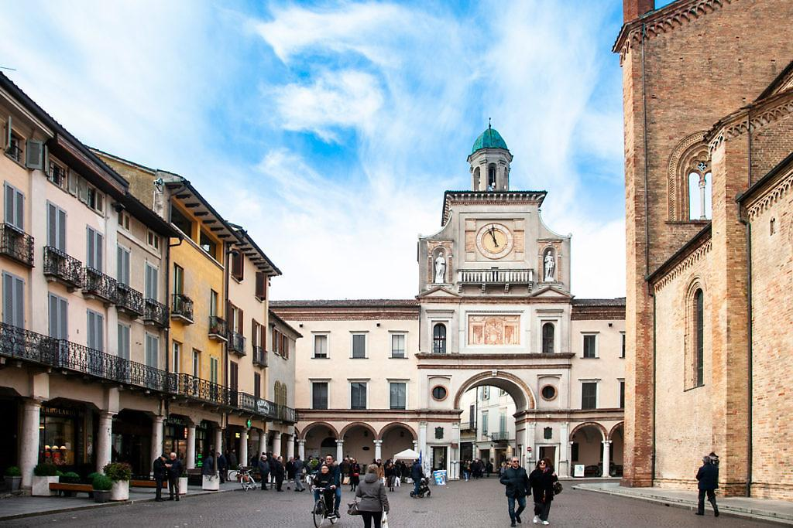

Gite fuori porta
Uscendo dal centro
Milano è un punto di partenza perfetto: in poco tempo possiamo raggiungere borghi, parchi, città d'arte e paesaggi diversi, spesso anche senza auto.
Proponiamo gite fuori porta accessibili a tutti gli studenti, pensate per un sabato libero, una pausa dalla sessione o un weekend leggero.
Passeggiata nel Cremasco
Tra le destinazioni più interessanti per una gita fuori porta, Crema rappresenta una scelta particolarmente adatta a chi desidera allontanarsi da Milano per una giornata senza affrontare lunghi spostamenti. Facilmente raggiungibile in treno, è una delle mete più apprezzate da chi cerca luoghi carini nei dintorni, senza necessariamente utilizzare l'auto, e vuole scoprire una realtà ricca di storia e tradizioni.
Il centro storico si sviluppa attorno a Piazza Duomo, dominata dall'imponente Duomo di Crema, e conserva ancora oggi un'atmosfera elegante e raccolta. Passeggiando tra le vie principali, si incontrano edifici storici, caffè e scorci caratteristici che rendono piacevole la visita in qualsiasi periodo dell'anno. Tra i luoghi di maggiore interesse meritano una menzione il Santuario di Santa Maria della Croce, importante esempio di architettura rinascimentale, e le antiche mura cittadine, testimonianza del passato della città.
Negli ultimi anni, Crema ha acquisito ulteriore notorietà grazie al film "Chiamami col tuo nome", che ne ha valorizzato il patrimonio artistico e paesaggistico. Per questo motivo, rappresenta una valida proposta per chi è alla ricerca di idee per trascorrere un weekend fuori Milano alla scoperta di luoghi autentici della Lombardia. La combinazione tra patrimonio culturale, tranquillità e facilità di accesso rende la cittadina una meta particolarmente interessante anche per gli studenti universitari.

La Brianza e il Lago di Como
Quando Milano diventa troppo veloce, tra lezioni, metro affollate e giornate infinite in università, la Brianza e il Lago di Como sono la soluzione perfetta per staccare senza organizzare viaggi complicati.
Il Lago di Como è uno dei luoghi più iconici del Nord Italia: acqua blu profonda, montagne verdi che lo circondano e piccoli paesini che si affacciano direttamente sul lago. Appena arrivi, la sensazione è sempre la stessa: ritmo lento, aria pulita e voglia di non tornare più indietro.
Le tappe più belle e accessibili sono:
- Como:la porta d’ingresso al lago, perfetta per iniziare la giornata con una passeggiata sul lungolago, prendere un gelato e girare tra centro storico, piazze e locali vista acqua. Qui puoi anche salire con la funicolare per Brunate, da cui si vede tutto il lago dall’alto.
- Bellagio: il borgo più famoso del lago, situato proprio nel punto in cui i due rami si incontrano. È pieno di vicoletti, scalinate, boutique e scorci da cartolina.
- Varenna:più tranquilla e meno turistica rispetto a Bellagio, ma forse ancora più suggestiva. È ideale se vuoi una giornata rilassata: case colorate, lungolago silenzioso e piccoli punti dove sedersi a guardare l’acqua.
Uno dei motivi per cui il Lago di Como è così amato dagli studenti è che è facilissimo da raggiungere: partendo con il treno da Milano centrale o Milano Cadorna si può raggiungere il centro di Como in 40-60 minuti, per poi spostarsi verso tutte le città principali del lago con battelli o traghetti.
In alternativa alle gite sul Lago di Como e ai suoi paesaggi da cartolina” esiste una soluzione ancora più semplice e soprattutto super vicina a Milano: Monza. In soli 10–15 minuti di treno ti ritrovi completamente fuori dal caos cittadino, in una città più tranquilla, verde e perfetta per una giornata low cost da studenti.
Monza è una città a misura d’uomo, con un centro carino e facilmente girabile, ma il vero motivo per cui vale la pena andarci è il suo parco. Il Parco di Monza non è un parco qualunque, ma uno dei più grandi parchi cintati d’Europa, così vasto che sembra quasi un mondo a parte rispetto alla città. Il rumore di Milano sparisce e lascia spazio a viali infiniti, alberi altissimi e prati aperti dove gli studenti si ritrovano per rilassarsi, fare picnic o semplicemente sdraiarsi al sole. Accanto al parco si trova la Villa Reale, elegante e scenografica, che aggiunge un tocco storico alla visita e rende la passeggiata ancora più completa: natura, relax e un po’ di cultura nello stesso posto.
Lasciaci un consiglio